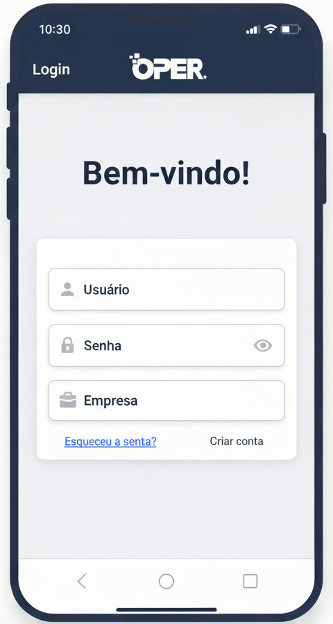

OPER Mobile

Login e Acesso
Login e Acesso Rápido
Nosso sistema de login foi projetado para oferecer máxima segurança sem comprometer a experiência do usuário.
Login e Acesso Rápido
Segurança e praticidade na palma da mão
Acesse a plataforma OPER de forma segura e rápida. Nosso sistema de login foi projetado para oferecer máxima segurança sem comprometer a experiência do usuário.
- Autenticação segura com criptografia
- Acesso multi-empresa
- Lembrar credenciais para acesso rápido
- Recuperação de senha simplificada